Биполярные транзисторы
- Устройство биполярного транзистора
- Система обозначений биполярных транзисторов
- Основные параметры биполярных транзисторов
- Режимы работы биполярного транзистора
- Управление биполярным транзистором
- Статические характеристики биполярного транзистора
- h-параметры биполярного транзистора
- Частотные свойства биполярного транзистора
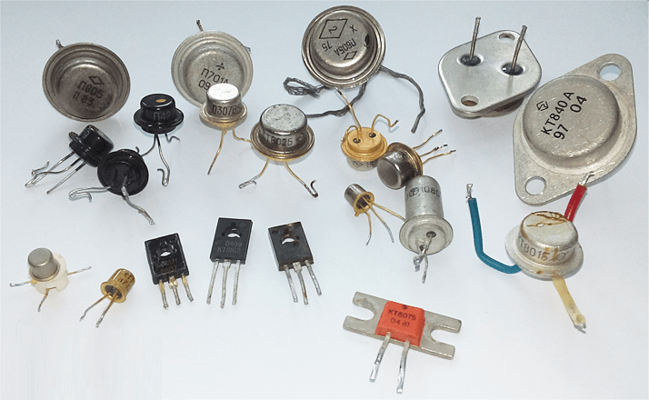
Рис. 1 - Биполярные транзисторы
Устройство биполярного транзистора
Биполярный транзистор представляет собой полупроводниковый прибор, имеющий два р-n-перехода, образованных в одном монокристалле полупроводника. Эти переходы образуют в полупроводнике три области с различными типами электропроводности. Одна крайняя область называется эмиттером (Э), другая — коллектором (К), средняя — базой (Б). К каждой области припаивают металлические выводы для включения транзистора в электрическую цепь.
Электропроводность эмиттера и коллектора противоположна электропроводности базы.
В зависимости от порядка чередования р- и n-областей различают транзисторы со структурой р-n-р (рис. 1, а) и n-р-n (рис. 1, б) (иногда их еще называют прямой и обратный).
Условные графические обозначения транзисторов p-n-р и n-p-n отличаются лишь направлением стрелки у электрода, обозначающего эмиттер. Принцип работы транзисторов p-n-р и n-p-n одинаков.
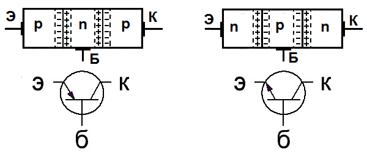
Рис. 1 - Структуры и условные графические обозначения биполярных транзисторов типа р-n-р (а) и n-р-n (б)
Электронно-дырочный переход, образованный эмиттером и базой, называется эмиттерным, а коллектором и базой — коллекторным. Расстояние между переходами очень мало; у высокочастотных транзисторов оно менее 10 микрометров, а у низкочастотных не превышает 50 мкм (1 мкм=0,001 мм).
Основная функция транзистора - это усиление сигнала. Если на базу транзистора подать напряжение, то транзистор начнет открываться. В транзисторе переход коллектор-эмитер открывается плавно: от полностью закрытого состояния (Uб= 0 В) до полностью открытого (этот момент называют напряжение насыщения).
Между коллектором и эмиттером течет сильный ток, он называется коллекторный ток (Iк), между базой и эмиттером - слабый управляющий ток базы (Iб). Величина коллекторного тока зависит от величины тока базы. Причем, коллекторый ток всегда больше тока базы в определенное количество раз. Эта величина называется коэффициент усиления по току, обозначается h21э. У различных типов транзисторов это значение колеблется от единиц до сотен раз.
Коэффициент усиления по току - это отношение коллекторного тока к току базы:
h21э = Iк/Iб
Для того, чтобы вычислить коллекторный ток, нужно умножить ток базы на коэффициент усиления:
Iк = Iб · h21э
Пример: Возмем источник питания, транзистор, резистор и лампочку. Если подключить всё это согласно схеме (рис. 2), то: через резистор, подключенный между источником питания и базой транзистора потечет ток базы Iб.
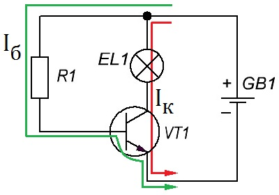
Рис. 2 - Принцип работы биполярных транзисторов
Транзистор откроется и лампочка загориться. Причем яркость свечения лампочки будет зависить от сопротивления резистора и коэффициента усиления транзистора.
Напряжение, прилагаемое к базе и необходимое для открытия транзистора, называют напряжением смещения. Если вместо постоянного резистора поставить переменный резистор, то получим возможность регулировать яркость свечения лампочки.
Таким же образом можно усиливать и сигналы: подавая на базу транзистора определенный сигнал (к примеру звук), в коллекторной цепи получим тот же сигнал, но уже усиленный в h21Э раз.
Если базовое смещение транзистора застабилизировать при помощи стабилитрона (рис. 3), то мы получим простейший стабилизатор напряжения, т.у. схему, которая будет поддерживать постоянное напряжение на выходе, даже если входное напряжение будет изменяться.
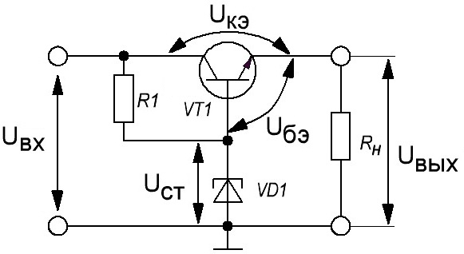
Рис. 3 - Пример простого стабилизатора напряжения
Для получения повышенной мощности используются схемы последовательного включения наскольких транзисторов, так называемые схемы Дарлингтона (или составные транзисторы)
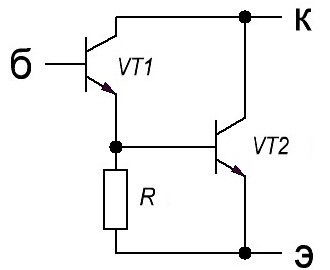
Рис. 4 - Схема Дарлингтона
Система обозначений биполярных транзисторов
У транзисторов,разработанных до 1964 года условные обозначения типа состоят из двух или трех элементов. Первый элемент обозначения - буква П, означающая, что данная деталь и является, собственно, транзистором. Биполярные транзисторы в герметичном корпусе обозначались двумя буквами - МП, буква М означала модернизацию(корпус транзистора холодносварочной конструкции). Второй элемент обозначения - одно, двух или трехзначное число, которое определяет порядковый номер разработки и подкласс транзистора, по роду полупроводникового материала, значениям допустимой рассеиваемой мощности и граничной(или предельной) частоты.
От 1 до 99 - германиевые маломощные низкочастотные транзисторы (до 5 МГц, до 0,25 Вт).
От 101 до 199 - кремниевые маломощные низкочастотные транзисторы (до 5 МГц, до 0,25 Вт).
От 201 до 299 - германиевые мощные низкочастотные транзисторы (до 5 МГц, более 0,25 Вт).
От 301 до 399 - кремниевые мощные низкочастотные транзисторы (до 5 МГц, более 0,25 Вт).
От 401 до 499 - германиевые высокочастотные и СВЧ маломощные транзисторы (свыше 5 МГц, до 0,25 Вт).
От 501 до 599 - кремниевые высокочастотные и СВЧ маломощные транзисторы (свыше 5 МГц, до 0,25 Вт).
От 601 до 699 - германиевые высокочастотные и СВЧ мощные транзисторы (свыше 5 МГц, более 0,25 Вт).
От 701 до 799 - кремниевые высокочастотные и СВЧ мощные транзисторы (свыше 5 МГц, более 0,25 Вт).
Третьим элементом может быть буква, определяющая классификацию по параметрам транзисторам, изготовленной по одной технологии. Например:
Например:
П416Б — транзистор германиевый, высокочастотный, малой мощности, разновидности Б;
МП39Б — германиевый транзистор, имеющий холодносварочный корпус, низкочастотный, малой мощности, разновидности Б.
МП42 - транзистор германиевый, низкочастотный, маломощный, номер разработки - 42 .
П401 - транзистор германиевый, маломощный,высокочастотный, номер разработки - 1.
Начиная с 1964 года была введена другая система обозначений, действовшая до 1978 года. Ее появление было связано с появлением большого числа новых серий разнообразных полупроводниковых приборов, в частности - полевых транзисторов.
В новой системе обозначений используется шифр, который состоит из 5 элементов:
1-й элемент системы обозначает исходный материал, на основе которого изготовлен транзистор:
- Г или 1 — германий,
- К или 2 — кремний,
- А или 3 — арсенид галлия,
- И или 4 — индий.
2-й элемент — буква Т (биполярный транзистор) или П (полевой транзистор).
3-й элемент — цифра, указывающая на функциональные возможности транзистора по допустимой рассеиваемой мощности и граничной частоте.
Транзисторы малой мощности, Рmах < 0,3 Вт:
1 — маломощный низкочастотный, fгр < 3 МГц;
2 — маломощный среднечастотный, 3 < fгр < 30 МГц;
3 — маломощный высокочастотный, 30 < fгр < 300 МГц.
Транзисторы средней мощности, 0,3 < Рmах <1,5 Вт:
4 — средней мощности низкочастотный;
5 — средней мощности среднечастотный;
6 — средней мощности высокочастотный.
Транзисторы большой мощности, Рmах >1,5 Вт:
7 — большой мощности низкочастотный;
8 — большой мощности среднечастотный;
9 — большой мощности высокочастотный и сверхвысокочастотный (fгр>300 Гц).
4-й элемент — цифры от 01 до 99, указывающие порядковый номер разработки.
5-й элемент — буквы от А до Я, обозначающая деление технологического типа приборов на группы.
Например:
КТ540Б — кремниевый транзистор средней мощности среднечастотный, номер разработки 40, группа Б.
КТ315А — кремниевый биполярный транзистор, маломощный, высокочастотный,подкласс А.
С 1978 года были введены изменения, первые два символа обозначающие материал и подкласс транзистора остались прежними.
Изменения коснулись обозначения функциональных возможностей - третьего элемента.
Для биполярных транзисторов:
1 - транзистор с рассеиваемой мощностью до 1 Вт и граничной частотой до 30 МГц.
2- транзистор с рассеиваемой мощностью до 1 Вт и граничной частотой до 300 МГц.
4 - транзистор с рассеиваемой мощностью до 1 Вт и граничной частотой более 300 МГц.
7 - транзистор с рассеиваемой мощностью более 1 Вт и граничной частотой до 30 МГц.
8 - транзистор с рассеиваемой мощностью более 1 Вт и граничной частотой до 300 МГц.
9 - транзистор с рассеиваемой мощностью более 1 Вт и граничной частотой свыше 300 МГц.
Те же обозначения действительны и для полевых транзисторов. Для обозначения порядкового номера разработки используют трехзначные числа от 101 до 999(следующие три знака). Для дополнительной классификации используют буквы русского алфавита, от А до Я. Цифра, написанная через дефис после седьмого элемента - обозначения модификаций бескорпусных транзисторов:
1 - с гибкими выводами без кристаллодержателя.
2 -с гибкими выводами на кристаллодержателе.
3 - с жесткими выводами без кристаллодержателя.
4 - с жесткими выводами на кристаллодержателе.
5 - с контактными площадками без кристаллодержателя и без выводов.
6 - с контактными площадками на кристаллодержателе, но без выводов.
Пример:
КТ2115А-2 кремниевый биполярный транзистор для устройств широкого применения, маломощный, высокочастотный, бескорпусный с гибкими выводами на кристаллодержателе.
В импортной (японской )маркировке первые три символа обозначают структуру:
- 2SA или 2SB: 2-переходовый, P-N-P структура, A -высокочастотный, B- низкочастотный
- 2SC или 2SD: 2-переходовый, N-P-N структура, C- высокочастотный, D- низкочастотный
Пример:
2SC1815 - N-P-N высокочастотный,
2SB698 - P-N-P низкочастотный.
Основные параметры биполярных транзисторов
- Статический коэффициент передачи тока h21Э (коэффициент усиления) – отношение постоянного тока коллектора к постоянному току базы в схеме с общим эмиттером.
- Максимально допустимая мощность рассеиваемая коллектором Pк max – превращаемая в тепло мощность, вызванная током коллектора. Превышение максимально допустимой мощности транзистора приводит к перегреву коллекторного перехода и выходу его из строя.
- Максимально допустимый ток коллектора Iк max. Превышение предельного значения тока коллектора приводит к тепловому пробою коллекторного перехода и выходу транзистора из строя.
- Максимально допустимое напряжение между коллектором и базой Uкб max. Это напряжение определяется величиной пробивного напряжения коллекторного перехода.
- Напряжение насыщения коллектор–эмиттер Uкэ нас – напряжение между выводами коллектора и эмиттера в режиме полного открытия транзистора (насыщения).
- Максимальное напряжение между коллектором и эмиттером Uкэ max (при разомкнутой базе). У высоковольтных транзисторов, достигает десятков тысяч вольт
- Предельная частота, до которой коэффициент передачи тока выше 1. У низкочастотных транзисторов до 100 кГц, у высокочастотных - свыше100 кГц.
Режимы работы биполярного транзистора
В зависимости от способа подключения р-n-переходов транзистора к внешним источникам питания он может работать в режиме отсечки, насыщения или активном режиме.
Режим отсечки
Режим отсечки транзистора получается тогда, когда эмиттерный и коллекторный p-n-переходы подключены к внешним источникам в обратном направлении (рис. 5). В этом случае через оба p-n-перехода протекают очень малые обратные токи эмиттера (Iэбо) и коллектора (Iкбо). В этом случае говорят, что транзистор полностью закрыт или просто закрыт.
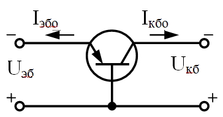
Рис. 5 - Транзистор в режиме отсечки
Ток базы равен сумме этих токов и в зависимости от типа транзистора находится в пределах от единиц микроампер — мкА (у кремниевых транзисторов) до единиц миллиампер — мА (у германиевых транзисторов).
Режим насыщения
Если эмиттерный и коллекторный р-n-переходы подключить к внешним источникам в прямом направлении, транзистор будет находиться в режиме насыщения (рис. 6 ). Через эмиттер и коллектор транзистора потекут токи насыщения эмиттера (Iэ.нас) и коллектора (Iк.нас). Величина этих токов в много раз больше токов в режиме отсечки.
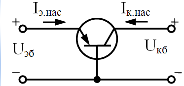
Рис. 6 - Транзистор в режиме насыщения
При этом ток коллектора перестаёт зависеть от тока базы. Он перестаёт увеличиваться, даже если продолжать увеличивать ток базы. В этом случае говорят, что транзистор полностью открыт или просто открыт. Чем глубже мы уходим в область насыщения - тем больше ломается зависимость Iк=βIб. Внешне это выглядит так, как будто коэффициент β уменьшается.
Есть такое понятие, как коэффициент насыщения. Он определяется как отношение реального тока базы (того, который у вас есть в данный момент) к току базы в пограничном состоянии между активным режимом и насыщением.
Режимы отсечки и насыщения используются при работе транзисторов в импульсных схемах и в режиме переключения.
Активный режим
При работе транзистора в активном режиме (нормальном активном режиме) эмиттерный переход включается в прямом, а коллекторный — в обратном направлениях (рис. 7).
В активном режиме ток базы в десятки и сотни раз меньше тока коллектора и тока эмиттера.
Для токов коллектора и эмиттера выполняется соотношение:
Iк= h21Б Iб
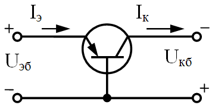
Рис. 7 - Транзистор в активном режиме
Величина h21Б называется статическим коэффициентом передачи тока эмиттера. Для современных транзисторов h21Б=0,90...0,998. Активный режим используется при построении транзисторных усилителей.
Инверсный активный режим
Если на эмиттерном переходе обратное смещение, а на коллекторном - прямое, то транзистор попадает в инверсный активный режим. Этот режим является довольно экзотическим и используется редко. Несмотря на то, что на рисунках эмиттер не отличается от коллектора и по сути они должны быть равнозначны, на самом деле у них есть конструктивные отличия (например в размерах) и равнозначными они не являются. Именно из-за этой неравнозначности и существует разделение на "нормальный активный режим" и "инверсный активный режим".
Барьерный режим
Иногда ещё выделяют пятый, так называемый, "барьерный режим". В этом случае база транзистора закорочена с коллектором. По сути правильнее было бы говорить не о каком-то особом режиме, а об особом способе включения. Режим тут вполне обычный - близкий к пограничному состоянию между активным режимом и насыщением. Его можно получить и не только закорачивая базу с коллектором. В данном конкретном случае при таком способе включения, как бы мы не меняли напряжение питания или нагрузку - транзистор всё равно останется в этом самом пограничном режиме. То есть транзистор в этом случае будет эквивалентен диоду.
Управление биполярным транзистором
Биполярный транзистор управляется током: для того, чтобы между коллектором и эмиттером мог протекать ток (по другому говоря, чтобы транзистор открылся), должен протекать ток между эмиттером и базой (или между коллектором и базой - для инверсного режима).
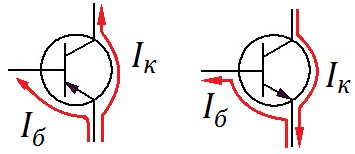
Рис. 8 - Токи биполярного транзистора
Величина тока базы и максимально возможного тока через коллектор (при таком токе базы) связаны постоянным коэффициентом β (коэффициент передачи тока базы):
βIб=Iк.
Кроме параметра β используется ещё один коэффициент: коэффициент передачи эмиттерного тока (α). Он равен отношению тока коллектора к току эмиттера:
α=Iк/Iэ.
Значение этого коэффициента обычно близко к единице (чем ближе к единице - тем лучше). Коэффициенты α и β связаны между собой следующим соотношением:
β=α/(1-α).
В отечественных справочниках часто вместо коэффициента β указывают коэффициент h21Э (коэффициент усиления по току в схеме с общим эмиттером), в зарубежной литературе иногда вместо β можно встретить hFE. Можно считать, что все эти коэффициенты равны, а называют их часто просто "коэффициент усиления транзистора".
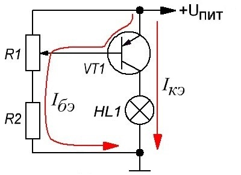
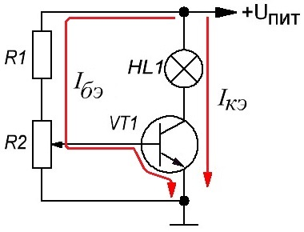
Рис. 9 - Схемы управления биполярным транзистором
На рисунке 9 изображены простейшие схемы. Они эквивалентны, но построены с участием транзисторов разных проводимостей.
Рассмотрим левую схему (на правой схеме всё то же самое, только с транзистором другой проводимости). Представим себе, что ползунок переменного резистора в верхнем положении. При этом на базе транзистора напряжение равно напряжению на эмиттере, ток базы равен нулю, следовательно ток коллектора тоже равен нулю (IК=βIБ) - транзистор закрыт, лампа не светится. Начинаем опускать ползунок вниз - напряжение на нём начинает опускаться ниже, чем на эмиттере - появляется ток из эмиттера в базу (ток базы) и одновременно с этим - ток из эмиттера в коллектор (транзистор начнёт открываться). Лампа начинает светиться, но не в полный накал. Чем ниже мы будем перемещать ползунок переменного резистора - тем ярче будет гореть лампа.
Если мы начнём перемещать ползунок переменного резистора вверх - то транзистор начнёт закрываться, а токи из эмиттера в базу и из эмиттера в коллектор - начнут уменьшаться.
Рассмотренный режим работы транзистора как раз является активным. Коэффициент β может измеряться десятками и даже сотнями. То есть для того, чтобы сильно менять ток, протекающий из эмиттера в коллектор, достаточно лишь немного изменять ток, протекающий из эмиттера в базу.
Статические характеристики биполярного транзистора
Эти характеристики показывают графическую зависимость между токами и напряжениями транзистора и могут применяться для определения некоторых его параметров, необходимых для расчета транзисторных схем. Наибольшее применение получили статические входные и выходные характеристики.
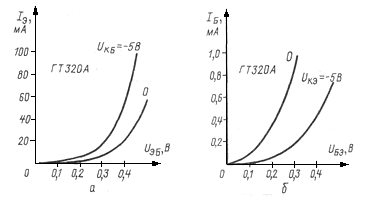
Рис. 10 - Входные характеристики германиевого транзистора типа р-n-р в схемах с ОБ (а) и ОЭ (б)
Входные статические характеристики представляют собой вольтамперные характеристики эмиттерного электронно-дырочного перехода (ЭДП). Если транзистор включен по схеме с общей базой, то это будет зависимость тока эмиттера Iэ от напряжения на эмиттерном переходе Uэб (рис. 10, а). При отсутствии коллекторного напряжения (Uкб = 0) входная характеристика представляет собой прямую ветвь вольтамперной характеристики эмиттерного ЭДП, подобную ВАХ диода. Если на коллектор подать некоторое напряжение, смещающее его в обратном направлении, то коллекторный ЭДП расширится и толщина базы вследствие этого уменьшится. В результате уменьшится и сопротивление базы эмиттерному току, что приведет к увеличению эмиттерного тока, то есть характеристика пройдет выше.
При включении транзистора по схеме с общим эмиттером входной характеристикой будет графическая зависимость тока базы IБ от напряжения на эмиттерном переходе UБЭ. Так как эмиттерный переход и при таком включении остается смещенным в прямом направлении, то входная характеристика будет также подобна прямой ветви вольтамперной характеристики эмиттерного ЭДП (рис. 10, б).
Выходные статические характеристики биполярного транзистора — это вольтамперные характеристики коллекторного электронно-дырочного перехода, смещенного в обратном направлении. Их вид также зависит от способа включения транзистора и очень сильно от состояния, а точнее — режима работы, в котором находится эмиттерный ЭДП.
Если транзистор включен по схеме с общей базой (ОБ) и Iэ=0, то есть цепь эмиттера оборвана, то эмиттерный ЭДП не оказывает влияния на коллекторный переход. Так как на коллекторный ЭДП подано обратное напряжение, то выходная характеристика, представляющая собой зависимость тока коллектора Iк от напряжения между коллектором и базой Uкб, будет подобна обратной ветви ВАХ диода (нижняя кривая на рис. 11, а). Если же на эмиттерный ЭДП подать прямое напряжение, то появится ток эмиттера Iэ, который создаст почти такой же коллекторный ток Iк. Чем больше прямое напряжение на эмиттерном ЭДП, тем больше значения эмиттерного и коллекторного токов и тем выше располагается выходная характеристика.
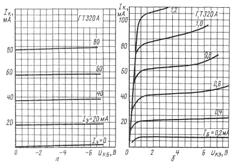
Рис. 11 - Выходные характеристики германиевого транзистора типа р-п-р в схемах с ОБ (а) и ОЭ (б)
Сказанное справедливо и при включении биполярного транзистора по схеме с общим эмиттером (ОЭ). Разница состоит лишь в том, что в этом случае выходные характеристики снимают не при постоянных значениях тока эмиттера, а при постоянных значениях тока базы Iб (рис. 11, б), и идут они более круто, чем выходные характеристики в схеме с ОБ.
При чрезмерном увеличении коллекторного напряжения происходит пробой коллекторного ЭДП, сопровождающийся резким увеличением коллекторного тока, разогревом транзистора и выходом его из строя. Для большинства транзисторов напряжение пробоя коллекторного перехода лежит в пределах от 20 до 30 В. Это важно знать при выборе транзистора для заданного напряжения источника питания или при определении необходимого напряжения источника питания для имеющихся транзисторов.
Увеличение температуры вызывает возрастание токов транзистора и смещение его характеристик. Особенно сильно влияет температура на выходные характеристики в схеме ОЭ (рис. 12).
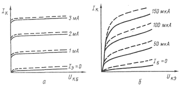
Рис. 12 - Зависимость выходных статических характеристик транзистора от температуры:
а — в схеме с ОБ, б — в схеме с ОЭ.
h-параметры биполярного транзистора
Все описанное выше касалось работы транзистора при постоянных напряжениях и токах его электродов. При работе транзисторов в усилительных схемах важную роль играют переменные сигналы с малыми амплитудами. Свойства транзистора в этом случае определяются так называемыми малосигнальными параметрами.
На практике наибольшее применение получили малосигнальные h-параметры (читается: аш-параметры). Их называют также гибридными, или смешанными, из-за того, что одни из них имеют размерность проводимости, другие сопротивления, а третьи вообще безразмерные.
Всего h-параметров четыре: h11 (аш-один-один), h12 (аш-один-два), h21 (аш-два-один) и h22 (аш-два-два) и определяются они следующими выражениями:
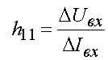
при Uвых=const.Запись const является сокращением слова constanta, то есть постоянная величина. В данном случае это означает, что при определении параметра h11 приращения входного напряжения ΔUвх и входного тока Iвх выбираются при неизменном (постоянном) значении выходного напряжения Uвых. Параметр h11 характеризует входное сопротивление биполярного транзистора и измеряется в омах. Более кратко выражение для определения параметра h11 записывают в виде:
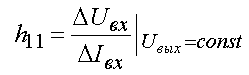
Параметры h12, h21 и h22 определяются следующими выражениями:
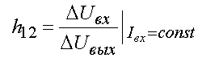
— коэффициент обратной связи по напряжению, безразмерная величина;
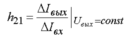
— коэффициент прямой передачи по току, безразмерная величина;
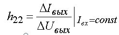
— выходная проводимость, измеряется в сименсах (См ).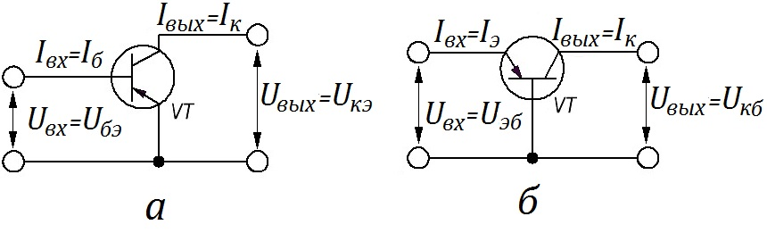
Рис. 13 - Токи и напряжения транзистора в схемах с ОЭ (а) и ОБ (б)
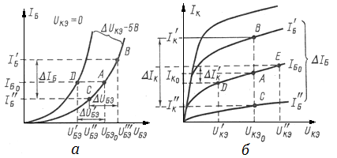
Рис. 14 - Определение статических h-параметров транзистора по его статическим характеристикам
Знак Δ означает небольшое изменение напряжения U или тока I относительно их значений в статическом режиме.
Все h-параметры можно определить по статическим характеристикам. При этом параметры h11 и h12 определяются по входным, а h21 и h22 - по выходным характеристикам. Необходимо только иметь в виду, что значения h-параметров зависят от схемы включения транзистора. Для указания схемы включения к цифровым индексам h-параметров добавляется буквенный индекс: б — если транзистор включен по схеме ОБ, или э — если транзистор включен по схеме ОЭ. Кроме того, приращения входных и выходных токов и напряжений нужно заменить приращениями напряжений и токов соответствующих электродов транзистора с учетом конкретной схемы включения (рис. 14).
Значения h-параметров зависят от режима работы транзистора, т. е. от напряжений и токов его электродов. Режим работы транзистора определяется на характеристиках положением рабочей точки, которую будем обозначать в дальнейшем буквой А. Если указано положение рабочей точки А на семействе статических входных характеристик транзистора, включенного по схеме ОЭ (рис. 14, а), параметры h11э и h12э определяются следующим образом:
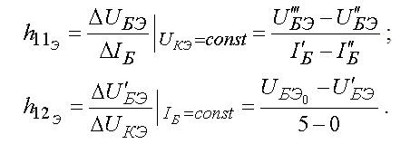
Параметры h21э и h22э определяются в рабочей точке А по выходным характеристикам (рис. 14, б) в соответствии с формулами:
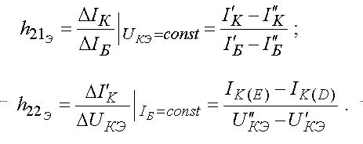
Аналогично рассчитываются h-параметры для схемы ОБ.
При расчете параметров h12 и h21 надо токи и напряжения подставлять в формулы в основных единицах измерения.
Параметр h21б называют коэффициентом передачи тока в схеме ОБ, а h21э — коэффициентом передачи тока в схеме ОЭ. В отличие от статических коэффициентов передачи h21Б и h21Э - рассчитываемых как отношение выходного тока к входному в схемах ОБ и ОЭ, параметры h21б и h21эопределяются как отношения изменений выходных токов к вызвавшим их изменениям входных токов. Иными словами, параметры h21б и h21эхарактеризуют усилительные свойства транзистора по току для переменных сигналов.
Частотные свойства биполярного транзистора
Параметры транзистора зависят от режима работы и частоты усиливаемых сигналов. Так, с увеличением частоты уменьшается абсолютное значение, или модуль, коэффициента передачи тока базы h21э. Модуль коэффициента обозначают |h21э|. Частота, на которой |h21э| уменьшается в раз по сравнению с его значением на низкой частоте, называется предельной частотой передачи тока базы fh21э. Частота, на которой |h21э| уменьшается до 1, называется граничной fгр (или fг).
При работе транзистора на частотах, превышающих fh21э его усилительные свойства уменьшаются вплоть fгр. На частотах, превышающих fгр, транзистор вообще не усиливает. Поэтому величиныfh21эили fгр позволяют судить о возможности работы транзистора в заданном диапазоне частот. По значению граничной частоты все транзисторы подразделяются на низкочастотные (fгр<3 МГц), средней частоты (3 МГц< fгр< 30 МГц) и высокочастотные (fгр>30 МГц). Транзисторы, у которых fгр> 300 МГц, называют сверхвысокочастотными.
В справочниках по полупроводниковым приборам для транзисторов обычно указываются модуль коэффициента передачи тока базы |h21э| и частота f, на которой определено его значение. По этим данным легко установить граничную частоту:
fгр=f ·|h21э|.
Например, для транзистора типа ГТ320Б значение |h21э|=6 на частоте f=20 МГц. Следовательно, граничная частота этого транзистора fгр = 20 · 6 = 120 МГц.
Источники:
radiohlam.ru - О транзисторах «на пальцах». Часть 1. Биполярные транзисторы